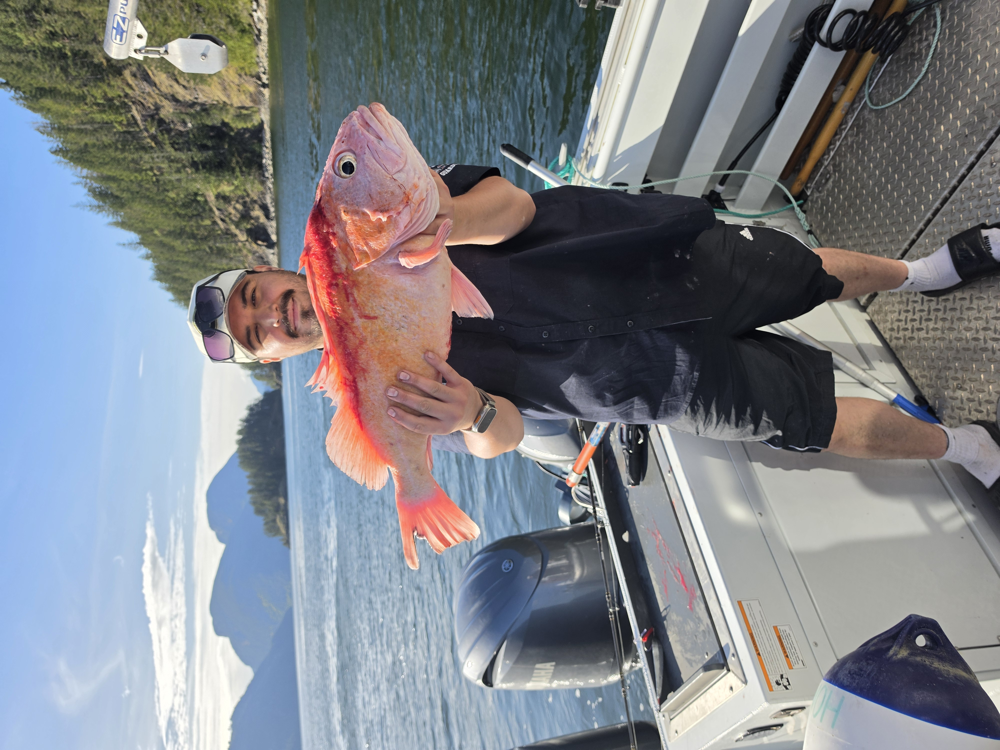

Aboriginal Guardian
Michael Paul-Yaniz
Conducts marine and fisheries monitoring across Homalco Traditional Territory, including underwater Remotely Operated Vehicle (ROV) surveys of deep-water glass sponge reefs, salmon escapement checks, and field patrols throughout Bute Inlet.